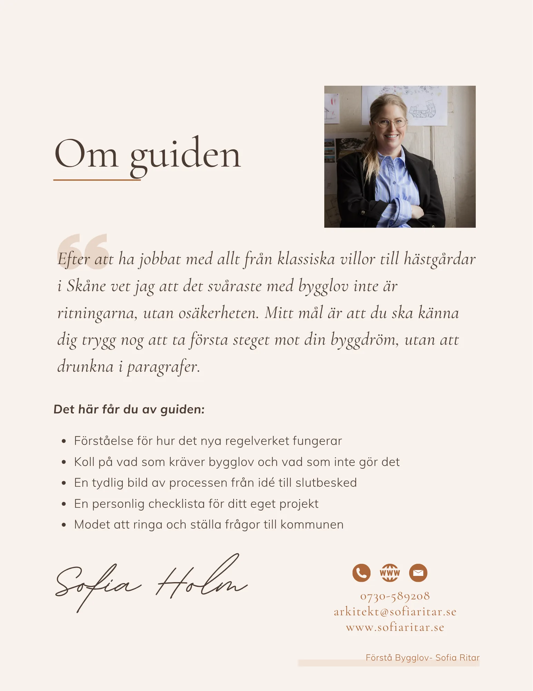

Lite mer koll.
Lite mindre huvudvärk.
Sofias digitala bygglovsguide – för dig som vill förstå processen innan du sätter igång.

Att söka bygglov
utan huvudvärk.
En lättillgänglig introduktion till bygglovsprocessen, tekniska frågor och vad du behöver förbereda. Med checklistor, begrepp och ett särskilt avsnitt för hästgårdar.
249 kr inklusive moms
Köp guiden hos Stripe10 kapitel · 23 sidor · PDF via e-post efter betalning
Du kan läsa på mobil, surfplatta eller dator – eller skriva ut. Har du frågor eller är du inte nöjd? Kontakta Sofia inom 14 dagar.
Det här får du med dig.
- Överblick över regelverket
- När bygglov behöver utredas
- Lovbefriade åtgärder och anmälan
- Vägen från idé till slutbesked
- Tekniska krav och kontrollplan
- Särskilda frågor för hästgårdar
- Vanliga fallgropar
- Ordlista
- Checklista för ditt projekt
- Nästa steg
Guiden är en introduktion. Förutsättningarna för en enskild fastighet behöver alltid kontrolleras med ansvarig myndighet.